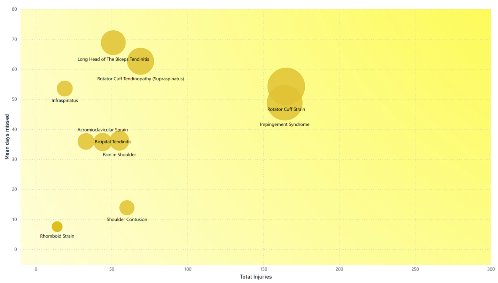
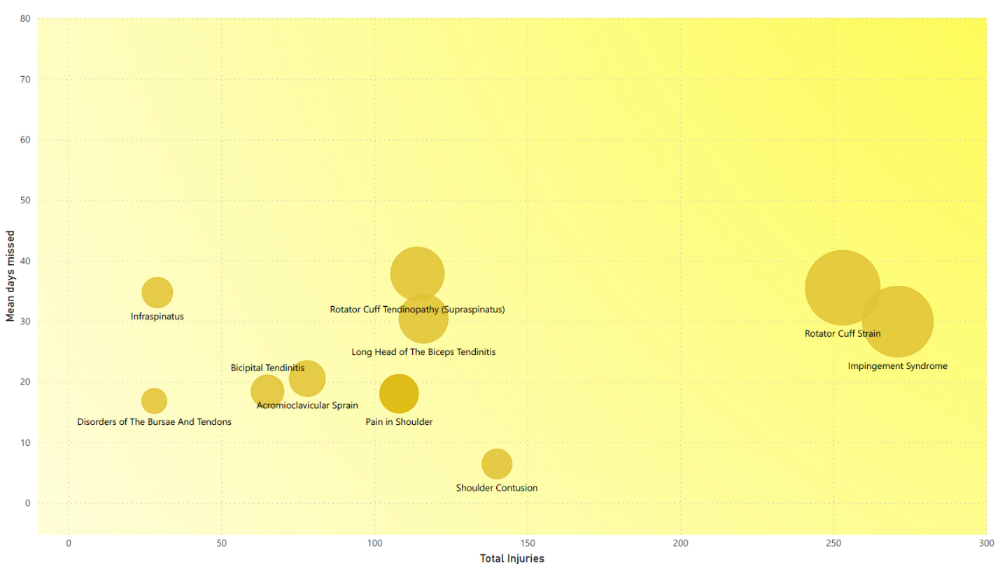
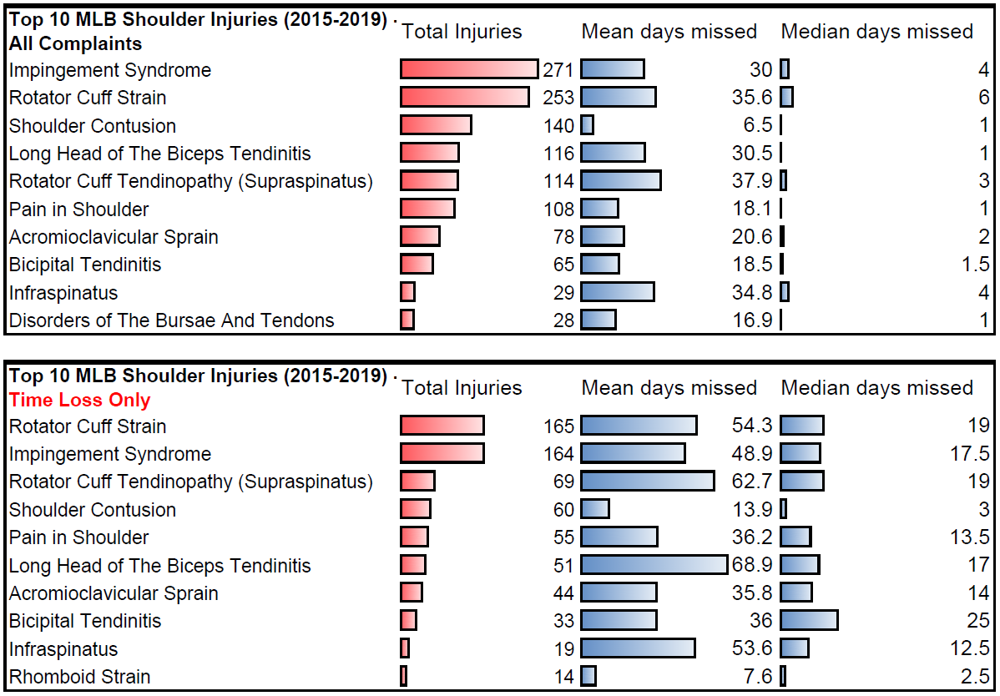
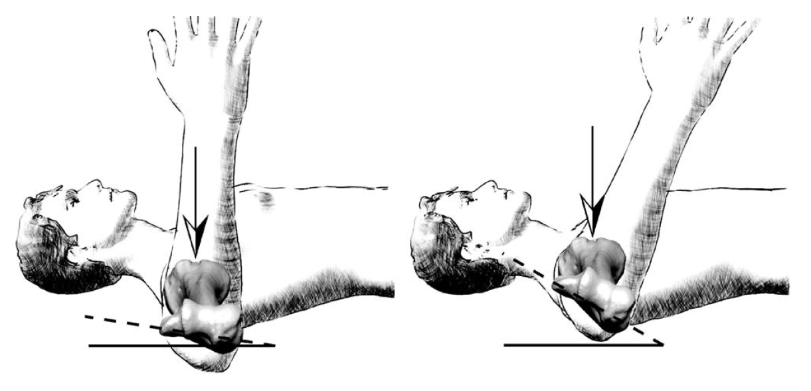
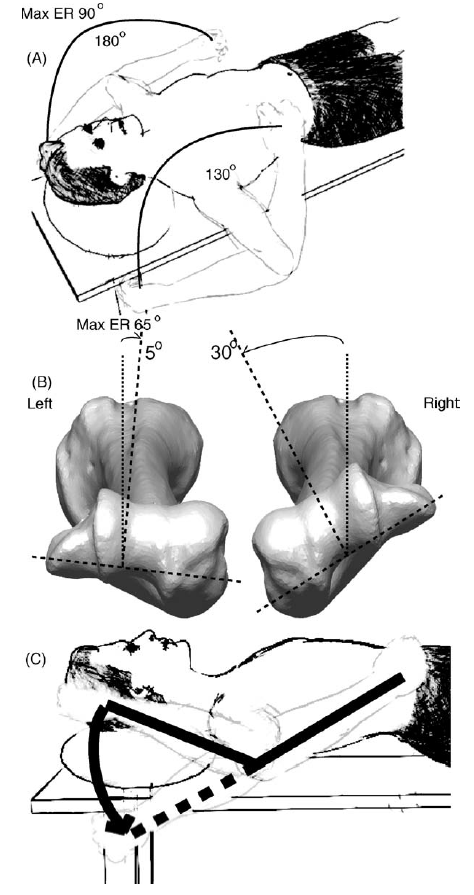
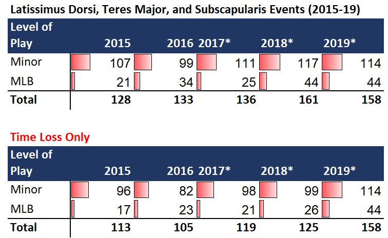
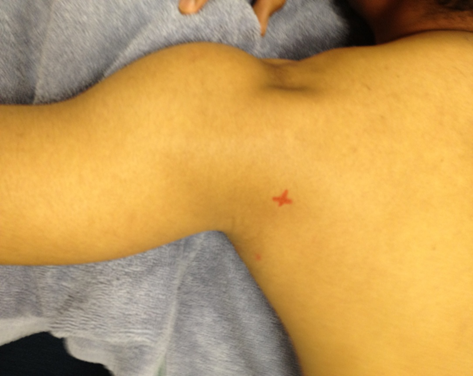
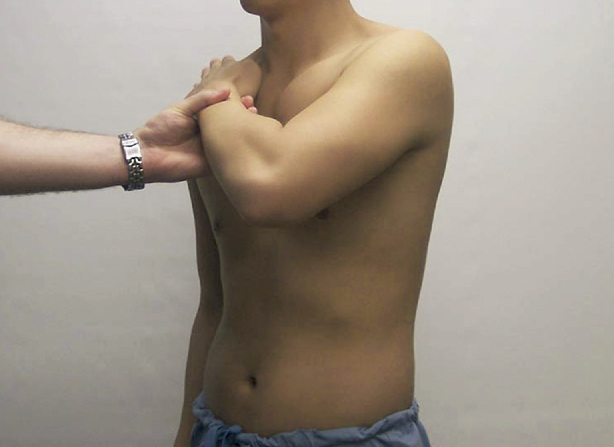

The Assessment and Management of Throwing-Related Shoulder Injuries
Lonnie Soloff, Martin Asker, Rod Whiteley
Throwing shoulder injuries are different¶
Perhaps you've heard this or experienced it clinically. The presentation and clinical patterns might at first seem like ones you've seen before, yet time and again you're left scratching your head because the patient in front of you has left you bewildered.
Don't panic, you're not alone. This chapter is designed to help you with these patients.
We're assuming that you don't have a full clinic and years of experience with high level throwers here, and our aim in this chapter is to guide you through the most commonly encountered clinical presentations you're likely to see, how to differentiate these, what to do, and how to know when things aren't going to plan. The nature of the chapter is that we can't cover everything you're ever going to see in your career, but we're hoping we will cover the 20% of conditions that will comprise over 80% of the patients that come through your door. To get an idea of what you'll typically see in clinical practice, we've included here in Table 1 the top 10 shoulder injuries from Major League Baseball's medical database for the 5 years up to the end of the 2019 season. Here we include both all categories, and the "time loss" injuries -- those which caused players to miss training or games. You'll notice a difference in the frequencies here in these 2 parts of the table which reminds us one feature of shoulder injury in professional throwing athletes is that they will often continue participating in training and games despite interfering shoulder symptoms. As a practitioner working with these athletes this underscores the importance of monitoring symptoms, and ideally intervening appropriately before they miss competition. The second point to be reminded of here is that arriving at a tissue-specific diagnosis for any given shoulder presentation is difficult to say the least. In the middle of the table you'll notice the category "pain in shoulder" -- reflecting this difficulty even those working at the highest level have. When putting this chapter together, one choice we had was breaking this into discrete pathologies, or presenting signs and symptoms. We have placed more emphasis on the latter given the players' history and physical examination findings have not changed a great deal in the last few decades, but our understanding of the underlying pathology has evolved significantly and will likely continue to do so. We fully expect more developments in this area in the coming years which would render obsolete some of the current putative diagnoses. Each section is presented with our presumed diagnostic category, and then, in order, the patient's likely presenting complaints -- what they are going to tell you. From this history, we've added the literature's current understanding of this pathology, and its burden on players. This is followed with our suggestions for your follow-up questions for these athletes. With this patient history completed, we then move on to the relevant physical examination, along with its clinical interpretation, and finally we've made some suggestions for a management plan, broadly split into 3 phases representing immediate care, return to sport, and an intermediate phase between these. This is not meant to be a recipe for you to blindly follow, but a launching point for your clinical reasoning, and integration with the patient in front of you -- their preferences, expectations, and requirements. Some sections are common across all and will therefore only be presented in detail the first time in the chapter to prevent duplication. This chapter is probably best read through the first time, and then when required you can jump back in to remind yourself just at the relevant section when an athlete presents with the history described.
After you have a solid understanding of these presentations it becomes easier to identify those that don't fit these patterns. Here's where your clinical reasoning detective work and reaching out to colleagues is going to deepen your experience bucket and plug these gaps. That's how it has worked for us over the last 30 years working with these athletes, and each of us expects to keep learning from our patients in this way.



"Internal impingement"¶
Patient presentation¶
"I'm getting this sharp pain inside my shoulder, and I am losing velocity."
"It feels inside at the top here"
"It's at the top at the back"
"It's worse I think in cocking phase"
"It runs down here..."
"It's been on and off for a while now, I can't really remember any particular thing kicking this off, but it's getting worse"
What's our current understanding of the pathology and the tissues involved?¶
The undersurface of the postero-superior rotator cuff (supraspinatus and the antero-superior fibres of infraspinatus) are typically seen to be frayed and associated with injury to the superior glenoid labrum. It's suspected that during the late cocking phase of hard throwing where the shoulder externally rotates while at 90° of abduction, and importantly, moves into horizontal abduction. In this position it's believed that the undersurface of the postero-superior rotator cuff folds inside the glenohumeral joint and is compressed between the glenoid labrum and the head of the humerus. Additionally during the extremes of rotation, the long head of the biceps tendon, being trapped in the bicipital groove, is pulled from its attachment (which becomes the superior labrum). This combination of compression to the undersurface of the rotator cuff during horizontal abduction, and tension placed through the labrum during late cocking and follow-through (external and internal rotation respectively) appear to be the primary mechanisms at play for the injuries seen.
Injuries to the superior labrum, were first described by Andrews3 and then Snyder98 in the United States, and independently by Walch107 in Europe. Snyder, further sub-defined his original series of 27 subjects from a retrospective review of 700 arthroscopies into four subtypes. This classification system has been further refined (delineating three subtypes of Type II SLAP lesions)11 and extended to include an increased variation in SLAP lesion types such that there are now more than 10 types of SLAP lesion described72, which doesn't include subtypes. Clinically it's simpler to consider SLAP lesions by their essential manifestation: an incompetence of the articular fibrocartilaginous extension of the insertion of the long head of biceps superiorly (and/or triceps inferiorly). For a deep dive into the anatomy of the labrum of the glenoid, and its relation to the long heads of the biceps and triceps, the interested reader is directed elsewhere45. In short, the circumferentially placed fibrocartilaginous labrum is the intermediate structure between the tendons of the long heads of the biceps (superiorly) and triceps (inferiorly) becoming the insertion of these fibres into the scapula (glenoid)45.
What else to ask about¶
Throwing load history -- pitch counts, bull pens, learning a new pitch, try-outs/showcases. Specifically find out how many: throwing sessions per week, hard throws per week and per session, and ask about any new training regimens, weighted ball training, velocity development programs.
Has any imaging been done, and what are the results -- note importance of false positive (incidental) findings70 especially in professional baseball players16, 60, 71.
What's been the response to any treatments, medications so far?
What's coming up -- what do we need to get the patient ready for?
It is worth noting that often the athlete will describe a 'dead arm'. Those who more commonly deal with impact sports can mistakenly interpret this as a sign of frank shoulder instability (neurological dead arm), and it pays to clarify this with the athlete in some detail. Rarely, if ever, will the athlete describe signs or symptoms of true instability (shoulder 'popping out' or true neurological deficit in the upper limb).
Physical examination¶
Rotational range of motion¶
Why GIRD is only half of the story¶
You've probably read something to the effect that with throwers you need to measure the amount of passive shoulder internal rotation that's available, compare it to the uninjured side, and document any loss as "GIRD" -- Glenohumeral Internal Rotation Deficit. Typically it's reported that more GIRD means more problems, and therefore you need to restore this flexibility as a priority. This is a simplification that we hope to clear up.
Half a century ago it was noted that professional throwing athletes commonly showed an increase in passive shoulder external rotation range of motion on their throwing arm and a similar sized decrease in internal rotation range of motion56. It took another 30 years until the notion of 'total arc of motion' (i.e. the sum of internal and external rotational range of motion, or the Total Rotational Range of Motion---TRROM52, 116) became more widely reported and considered more relevant in the assessment of shoulder flexibility. Central to this notion is that TRROM provides additional information regarding the throwing athlete which cannot be gleaned from examining IR or ER range alone. Relatively recently, it was proposed that TRROM loss, in particular a loss of more than 5°, was of clinical significance115.
The amount of twist along the long axis of the humerus is termed "humeral torsion" and influences the relative amounts of shoulder internal and external rotation by "shifting" this TRROM arc in toward external (retrotorsion) or internal (antetorsion) by that same amount. Greater humeral retrotorsion will effectively "shift" a given individual's rotational ROM toward external rotation; that is their external rotational ROM will be increased by the same amount that their internal rotation ROM is decreased, but there will be no change in their TRROM. Research on professional handball players in the late 1990's suggested that side-to-side differences in humeral torsion were both caused by throwing and related to throwing pathology86. In the years that followed, these data have been confirmed in different populations using different approaches87, 89, 110, 117 and it's been suggested that accurately interpreting rotational range of motion requires accounting for torsional differences between the arms of any given throwing athlete111.
The passive limits of shoulder rotational ROM are not determined by bony abutment, but by soft tissue extensibility. Where there's no injury or other tissue adaptation, both arms of any one person should be expected to have a similar amount of TRROM. Individual variability of course will mean that different people should have different TRROM, but both shoulders of one person should be the same, within the limits of measurement error. In the athlete, simple measurement of bilateral IR ROM (the GIRD approach), because it does not account for humeral torsion, will only be accurate in identifying the presence of soft tissue restrictions as the cause of the limited IR on the rare occasion that an individual has bilaterally equal humeral torsion. Clinically what's needed is to measure rotational range of motion as well as torsion on both sides. Once you know the side-to-side difference in torsion, then it's a simple matter to make the "adjustments" for the torsion difference from the uninjured side to set your rotational range of motion targets for the injured side.

Graphical representation of the difference humeral torsion will make in the measurement of glenohumeral rotation. In these two subjects, the position of the glenohumeral joint has been standardised by carefully positioning the bicipital groove uppermost (arrows). By virtue of a 20◦ increase in humeral retrotorsion (occurring in the shaft of the humerus), the subject on the left has a shift in shoulder rotation of 20◦. This subject would therefore show 20◦more external rotation and 20◦ less internal rotation.

\(A\) A reduction in total rotational range is evident on the patient's dominant right arm with an apparent reduction in both internal and external range of motion (130°) in comparison to the left (180°). It is unclear in which direction a flexibility intervention should instituted and it is conceivable that the clinician may aim to restore 25° of both internal and external rotation to the right arm.
\(B\) After ultrasound examination, it is determined that the right shoulder has an increase in humeral retrotorsion of 25° in comparison to the left. That is, in the bicipital groove upright position, the forearm of the right arm is at 5° while the L is at 30° internal rotation. Accordingly the subject is reaching their maximum internal rotation range on the right (25° less than at horizontal) and has in fact lost 50° from their external rotation range. (C) Fifty degrees of external rotation range needs to be restored to return the R shoulder to the full 180° of rotational range of motion which will be shifted towards external rotation due to greater humeral retrotorsion on this side.
In the case of injured arm retrotorsion increase this would mean adding this amount to the injured arm's external rotation and reducing the internal rotation range by that same amount. Because individual variation in torsion can be in either direction (retrotorsion or antetorsion) and of a variable magnitude (up to about 75° between individuals and 46° within an individual113), you can't rely on group averages to "guess" how much you should shift your range targets. The simplest and most accurate methods available to measure torsion in the clinic is using of diagnostic ultrasound modified with the addition of a spirit level on the linear probe110. With the patient supine, and the shoulder abducted to 90° with the elbow flexed to 90°, the bicipital groove is placed uppermost where the adjacent greater and lesser tubercles are of equal and maximum height. The inclination of the distal ulna is then measured as an indirect representation of the amount of humeral torsion110.
Rotational strength¶
It's now well understood that shoulder rotation is the result of activity of many muscles including the rotator cuff, peri-scapular, and axio-scapular, and that we are unable to isolate single muscles with any particular exercises9. That said, there is value in assessing the rotational strength of these athletes which allows for planning of rehabilitation targets (based on the force displayed). Where available, isokinetic testing is considered a gold standard method of testing, however there's no agreed testing position, speed, mode of contraction, or number of repetitions which should be performed112. Hand-held dynamometry is more practical in a clinical setting. Importantly the values you'll achieve when testing strength with a hand-held dynamometer vary significantly depending on the method of testing you use, as well as your experience in performing these tests. Careful attention is required for accurate and repeatable results. We prefer testing in standing, with the arm by the side, performing a purely rotational "break" test (i.e. a shallow eccentric contraction after a 2 second buildup of isometric force) with the dynamometer aligned to the ulnar styloid process, perpendicular to the forearm. In the absence of pre-injury reference values for the particular athlete, as a rough guide shoulder internal rotation strength is typically between 20 and 30% of bodyweight, and external rotation strength is two-thirds of internal rotation strength. Alternately the uninjured arm can be used as a reference, however for throwers the dominant arm is typically at least 10% stronger and perhaps as much as 40% stronger than the non-throwing arm.
Special tests: labrum
The glenoid labrum is largely devoid of innervation with a few nerve fibres identified sparsely in its periphery105 so there is a poor relation between identified structural abnormalities and pain in athletes with injury there. Accordingly, our ability to clinically diagnose these problems based on pain responses to provocative testing is similarly hampered as placing stress on apparently damaged tissue during examination may be entirely pain-free. This is reflected in the very high rates of positive imaging findings for labral injury in otherwise healthy baseball players16, 60, 70, 71 and the poor agreement between clinical and diagnostic imaging studies for shoulder pain22, 35, 41, 48.
Additionally, it's noted that in clinical practice there are many variations performed which are described as the same (named) test. This is understandable given the variability in clinical training and experience, but unfortunately extends to research where replication studies fail to perform the test as originally described. Further, the same test performed on different populations with inherently different underlying rates of injury will have different true and false positive and negative rates. Despite relatively poor diagnostic accuracy of these examination techniques, those that are positive for a given athlete can be useful reassessment signs during rehabilitation and assist in decision-making for rehabilitation progression. Where an athlete presents with the history as described above, we suggest that the clinical examination and use of special tests are of secondary importance in diagnosis due to these limitations.
With these strong caveats in mind, we suggest a battery of tests might be conducted to aid clinical decision making. For reference we present these tests, along with their original descriptions, study populations, and likelihood ratios2. The interested reader is directed elsewhere for verification studies (e.g. 17, 21, 38, 55, 67, 73, 75, 76, 79, 81-83, 99, 101, 108) where we suggest careful comparison of the methods used including reference populations and test technique.Table 34.1 Labral tests: original description, likelihood ratios and study populations
| Test name | Description from original paper | Labral injury (No labral injury) | +LR (-LR) |
Study population and notes. |
|---|---|---|---|---|
| O’Brien’s Active Compression78 | “patient asked to forward flex the affected arm 90° with the elbow in full extension. The patient then adducted the arm 10° to 15° medial to the sagittal plane of the body. The arm was internally rotated so that the thumb pointed downward. The examiner then applied a uniform downward force to the arm. With the arm in the same position, the palm was then fully supinated and the maneuver was repeated. The test was considered positive if pain was elicited with the first maneuver and was reduced or eliminated with the second maneuver. Pain localized to the acromioclavicular joint or on top of the shoulder was diagnostic of acromioclavicular joint abnormality. Pain or painful clicking described as inside the glenohumeral joint itself was indicative of labral abnormality.” | 53 (203) | ∞ (0.02) | 318 consecutive patients at the Hospital for special Surgery New York – 50 with no shoulder pain, 50 subsequently excluded for “incorrect testing”. Note: ‘…patient can distinguish between pain “on top” of the shoulder (that is, at the acromioclavicular joint) and pain “deep inside” the shoulder joint with or without a click’ |
| Crank62 | “…performed with the patient in the upright position with the arm elevated to 160° in the scapular plane. Joint load is applied along the axis of the humerus with one hand while the other performs humeral rotation. A positive test is determined either by 1) pain during the maneuver (usually during external rotation) with or without a click or 2) reproduction of the symptoms, usually pain or catching felt by the patient during athletic or work activities. This test should be repeated in the supine position, where the patient is usually more relaxed” | 32 (30) | 13.5 (0.1) | 62 patients (40 male) UCLA Orthopaedic Surgery Dept., 28 years old (18 to 57), 50 recreational athletes (12 non-athletes), >3 months of activity-related shoulder pain that increases with overhead motions, no cuff tear or instability, failure of pain relief with conservative management despite improvements with progressive strengthening and good compliance over a 3-month period. Patients with histories and physical examinations evident of rotator cuff abnormalities significant enough to cause weakness in scapular abduction, external rotation, or subscapularis muscle lift-off were also excluded. |
| Biceps Load II54 | “…patient in the supine position. The examiner sits adjacent to the patient on the same side as the shoulder and grasps the patient’s wrist and elbow gently. The arm to be examined is elevated to 120° and externally rotated to its maximal point, with the elbow in the 90° flexion and the forearm in the supinated position. The patient is asked to flex the elbow while resisting the elbow flexion by the examiner. The test is considered positive if the patient complains of pain during the resisted elbow flexion and also considered positive if the patient complains of more pain from the resisted elbow flexion regardless of the degree of pain before the elbow flexion maneuver. The test is negative if pain is not elicited by the resisted elbow flexion or if the preexisting pain during the elevation and external rotation of the arm is unchanged or diminished by the resisted elbow flexion.” | 39 (87) | 26.0 (0.11) | 127 consecutive patients (89 male) Department of Orthopaedic Surgery, Sungkyunkwan University School of Medicine South Korea, 31 years old (15 to 52), 36 recreational athletes. experiencing shoulder pain and underwent arthroscopic examination during the surgery. Patients with a history of either a shoulder dislocation or a stiff shoulder were excluded from the study. Two independent examiners with no knowledge of the results of the other clinical, radiographic, and magnetic resonance imaging data were assigned to perform the new diagnostic test. The results of the tests were confirmed during the arthroscopic examination |
| Resisted Supination External Rotation73 | “…supine position on the examination table with the scapula near the edge of the table. The examiner stood at the patient’s side, supporting the affected arm at the elbow and hand. The limb was placed in the starting position with the shoulder abducted to 90°, the elbow flexed 65° to 70°, and the forearm in neutral or slight pronation. The patient was asked to attempt to supinate the hand with maximal effort as the examiner resisted. The patient forcefully supinated the hand against resistance as the shoulder was gently externally rotated to the maximal point. He or she was asked to describe the symptoms at maximum external rotation. The test was positive if the patient had anterior or deep shoulder pain, clicking or catching in the shoulder, or reproduction of symptoms that occurred during throwing. The test was negative if the patient had posterior shoulder pain, apprehension, or no pain elicited.” | 29 (11) | 4.6 (0.2) | 40 athletes (39 males), Atlanta Sports Medicine and Orthopaedic Center; 4 recreational, 7 high school, 16 collegiate, 13 professional, average age 24 years (17-50). Patients older than 50 years, those with shoulder pain that was not the result of athletic injury, and those who did not undergo arthroscopic evaluation were excluded. Results of these tests were correlated to findings from the arthroscopic examination by the senior author within 1 week of the clinical examination. The senior author was blinded to the results of the clinical examinations until after the arthroscopy. |
| Anterior slide51 | “…examined either standing or sitting, with their hands on the hips with thumbs pointing posteriorly. One of the examiner’s hands is placed across the top of the shoulder from the posterior direction, with the last segment of the index finger extending over the anterior aspect of the acromion at the glenohumeral joint. The examiner’s other hand is placed behind the elbow and a forward and slightly superiorly directed force is applied to the elbow and upper arm. The patient is asked to push back against this force. Pain localized to the front of the shoulder under the examiner’s hand, and/or a pop or click in the same area, was considered to be a positive test. This test is also positive if the athlete reports a subjective feeling that this testing maneuver reproduces the symptoms that occur during overhead activity.” | 88 (138) [92] | 8.3 (0.2) [5.5, 0.3] | 226 patients in 5 groups (153 male) Lexington Clinic Sports Medicine Center, 25 years old (16 to 38). First 4 groups were shoulder pathology (isolated throwing related labral injury; cuff tears with & without labral injury; instability with & without labral injury; and reduced shoulder internal rotational range without symptoms or labral injury), 5th was asymptomatic football players. Sample size and likelihood ratios in [brackets] adjacent are recalculated removing this 5th group. |
| Dynamic labral Shear53 | Patient in a standing position, the involved arm is flexed 90° at the elbow, abducted in the scapular plane to above 120°, and externally rotated to tightness. It is then guided into maximal horizontal abduction. The examiner applies a shear load to the joint by maintaining external rotation and horizontal abduction and lowering the arm from 120° to 60° of abduction. A positive test is indicated by reproduction of the pain and/or a painful click or catch in the joint line along the posterior joint line between 120° and 90° of abduction. | 48 (53) [42 Type II] | 31.6 (0.3) | 325 consecutive patients (232 male, 43 years old ± 13 years) of whom 101 (59 male, 49 ± 15 years) ultimately had surgical confirmation were seen at the Lexington Clinic Sports Medicine Center for “shoulder pain”. For SLAP tears, the criteria included the 4-part Snyder classification98, the presence of a “peel back” lesion,11 and/or chondral damage on the superior glenoid rim92. A degenerative appearance of the labrum was not included unless it met the other criteria. |
What are the expected outcomes of treatment?¶
Conservative care¶
Currently, a trial of conservative care is the recommended first option for all players. Players can be reassured that perhaps half to three-quarters of them will be able to return to pre-injury levels. Younger players (\<26 years of age) who have had problems for less time (\< 12 months) have a better prognosis, but pitchers have a worse prognosis40. Worse prognosis again is associated with those who exacerbate during rehabilitation. Typically conservative care, when successful, results in a halving of the return to play time compared to surgical at approximately 6 months compared to 12.
Surgical care¶
Pitchers who do progress to SLAP surgery can expect at least a year of rehabilitation before they will return to play, and unfortunately those that do progress to surgery don't have a great prognosis with documented success rates varying from 7% to 62%10, 13, 15, 20, 28, 30, 33, 46, 49, 93, 97. More worryingly, there's evidence that for the general population with an isolated type II SLAP injury, repair or biceps tenodesis fare no better than sham surgery95 however no such data are available for overhead athletes.
For the cuff tendons, debridement is performed far more commonly (86%) than repair23 although isolated cuff debridement or repair is uncommon23, 66. Unfortunately only half who underwent debridement returned to play, only 42% of those at the same level, with the outcomes for repair worse at one third returning to play, and only 14% at the same level23 with similar results from different cohorts1, 61, 84.
These sobering findings need to borne alongside the conclusion that partial thickness articular sided cuff tears are likely not always associated with pain, and while they do probably progress over the following seasons, these changes aren't associated with pain or strength changes69.
Management¶
Acute
What's wrong with me? What's going to happen? What can I do about it?¶
Successful rehabilitation requires patient engagement, and this will be difficult if they can't answer the questions "what's wrong with me, what's going to happen, and what can I do about it?"32 It's helpful to frame reports of "pathology" on imaging in the context of normal adaptation to throwing and ageing as emphasized in the original description of SLAP lesions by Andrews3. To reduce anxiety and fear avoidance behaviours, it's important to remind the athlete of the body's capacity to heal injured tissue, and the fine line between activity-related adaptation and tissue "damage". There's no "correct" explanation strategy which will work for every patient, but it's suggested that some form of "teach-back" at the end of the initial examination is useful in establishing the degree of understanding36. As a suggestion, simply asking the athlete: "When you get home, what will you tell your friends/family/team-mates: is wrong, what needs to be done, and what's going to happen?" This can allow further explanation if required which will help with engagement and therefore compliance to care. Conservative care is the first line treatment for most throwing-related shoulder problems, but patients will see little short-term improvement initially, and a lot of hard work is required from them which doesn't always guarantee success. Faced with this reality, it's reasonable that patients often "shop around" for better news, quick fixes, and miracle cures. Your athlete's engagement with their rehabilitation, and therefore its chance of success, is directly proportional to how well they can answer the three questions starting this paragraph.
After a clear description of the problem is given to the player, we can then move to addressing modifiable factors which are associated with this condition.
When to reappraise your approach¶
Your patient has improved their strength and rotational range, met their targets to return to throwing, yet despite careful progression here has 'broken down' with the same pain as before, and essentially the same throwing intensity and volume a review is required. There are no clear rules which dictate when conservative care has irretrievably failed and a surgical opinion is mandatory. We suggest that a minimum of 12 weeks' rehabilitation would first need to be conducted with meaningful improvements in the clinical targets achieved before considering alternatives. Similarly, if more than 6 months of rehabilitation have passed with perhaps 3 months of failing to improve in any objective markers, then a reassessment would be sensible.
"Acceleration-related"¶
Patient presentation¶
"I made this one throw and..."
"Maybe it started with this one max effort throw, but since then..."
"I am feeling the pain here, and I get this pain when..."
What's our current understanding of the pathology and the tissues involved?¶
Epidemiologic data from MLB suggest that acceleration injuries are on the rise in professional baseball. Non-specific exam findings make acceleration-based injuries challenging to diagnose on initial exam. It sees us but we don't always see it! In addition to throwing athletes, these injuries are also seen in water skiers and rock climbers. The muscle-tendon unit appears to be at its most vulnerable when it's forcefully and rapidly contracting eccentrically at maximum lengths. Hard throwing places the internal rotation prime movers under this stress during every throw, so it's not surprising that the muscle-tendon unit of any of these muscles are susceptible to a strain injury during the transition from late cocking phase to acceleration. There are little epidemiological data available for this class of injury, but it appears that tendon, intra-muscular tendon, and muscle-tendon junction injuries are all seen clinically. Latissimus dorsi and Teres Major are strong internal rotators of the shoulder and are most active during the late cocking and acceleration phases94. These muscles are crucial to transfer energy from lower body and core to the arm and hand (ball), and likely a major determinant of throwing velocity. Of particular interest is that research has demonstrated that "skilled" throwers have much higher activity relative to amateurs26, 50. The subscapularis is the largest and most powerful muscle of the rotator cuff63 with the greatest force-producing capability of the rotator cuff muscles65, 109

What else to ask about¶
Depending on the location of patient's symptoms, careful examination of imaging of the latissimus dorsi, subscapularis, and teres major muscles is suggested as injuries here these have likely been overlooked sources of pain and dysfunction94. In latissimus dorsi and teres major injuries, the athlete typically presents with acute onset pain to the axilla and/or posterior shoulder, palpable defect based upon location and severity of injury, possibly ecchymosis, and painfully limited elevation and passive external rotation.

Physical examination
Strength¶
Objective assessment of internal rotation strength and association with symptom reproduction is key to diagnosis. We strongly suggest the use of at least a hand held dynamometer to measure force production, and have found doing so in 90°of shoulder flexion with the elbow flexed to 90° and the forearm horizontal a helpful test position. Additionally the "Bear Hug" 7 is described as a method of assessing internal rotation strength manually but can be modified to use an objective (dynamometer) strength measure.
"The bear-hug test was performed with the palm of the involved side placed on the opposite shoulder and fingers extended (so that the patient could not resist by grabbing the shoulder) and the elbow positioned anterior to the body. The patient was then asked to hold that position (resisted internal rotation) as the physician tried to pull the patient's hand from the shoulder with an external rotation force applied perpendicular to the forearm. The test was considered positive if the patient could not hold the hand against the shoulder or if he or she showed weakness of resisted internal rotation of greater than 20% compared with the opposite side. If the strength was comparable to that of the opposite side, without any pain, the test was negative."7
Typically these two strength tests will give enough information, however you may consider assessing seated shoulder extension in an end or mid-range position, seated shoulder adduction in end/mid-range where the clinical history is suggestive, but the previous tests are negative.

Bear-hug test at 45°: examiner with a hand on patient's wrist, as patient's elbow is held at 45° of forward flexion14.Range of motion¶
Supine passive range of motion -- especially motions that will lengthen these acceleration muscles (shoulder flexion, ER, abduction and horizontal abduction) will often will reproduce the patient's exact symptoms. Less throwing arm passive external rotation range of motion is associated with higher rates of subscapularis injury88.
What does the literature tell us?¶
latissimus dorsi/ teres major¶
For latissimus dorsi and teres major injuries, 80-90% return to previous performance level with conservative care24, 25, 68, 74, 94. Higher grade (III and IV) tears should be given surgical consideration. The largest reported series of professional pitchers 24 showed the majority (89%) to be treated conservatively with similar performance metrics on return to play, as did those treated surgically. Time to return to play for conservative care was variable at 170±170 days, but shorter than surgical which was 537±300 days24, similar findings to other series 23, 25, 94.
Subscapularis¶
Return to play times range from 11 to 60 days for conservative care - lower grade subscapularis injuries seem to return to play faster although data are scant88, 100. Injuries to the musculotendinous junction of the lower half of the subscapularis appear more common. Greater shoulder external rotation range of motion appear protective, especially where this is present through humeral torsion87, 88.
Management¶
Acute¶
Patient education¶
Acute muscle, muscle-tendon, and tendon injuries likely involve different healing pathways and timelines. There are no data at the throwing shoulder, but we speculate that appropriately identified purely contractile injuries would recover more quickly than muscle-tendon junction injury, which should be quicker than intra-muscular tendon injury, and quicker again than free tendon injury. The athlete should be informed that tissue healing is required, but we can influence the quality of healing with appropriate loading. Low grade contractile-only injuries may be fully resolved in days, whereas full-thickness tendon injuries may require surgical intervention for complete resolution. Where there is clinical suspicion of higher grade injury (marked reduction in strength, extremely high or low/absent pain) appropriate imaging and potentially surgical opinion is warranted. More commonly, conservative care can be implemented immediately.
Most throwers respond well to conservative management but complete recovery can take several weeks to as long as 6 months dependent on the sport and severity
Early, low loading of the injured (healing) tissue latissimus dorsi/ teres major¶
The function of the latissimus dorsi is complex47, 59, so similar to other two-joint muscles, active range of motion exercise can act as an appropriate method to initiate strengthening and optimize repair and remodeling during healing. This can primarily be accomplished in active range of motion external rotation at 0° and 90° abduction. It is appropriate to maintain external rotation dynamic isometric strengthening at this time. While undergoing isometric strengthening for the latissimus dorsi in extension and internal rotation, external rotation can be loaded through "dynamic isometric" exercises such as the external rotation walkout. This is also a good period to begin scapular motor control exercise in unweighted or isometric conditions. It is important to achieve end-range active flexion as well as internal rotation/adduction before progressing in to loaded exercise for the latissimus dorsi. Failure to do so can possibly put the athlete at greater risk of setback early in their return to sport progression. Light, perhaps isometric, painless, or very low level of transient pain for the injured tissue coupled with heavy loading of all uninjured structures throughout the kinetic chain. Any identified weaknesses in the kinetic chain can now be addressed with heavy loading which is otherwise not possible in-season. Progress to intermediate phase once return of nearly full passive and active range, and normal daily activities are pain-free.
Early, low loading of the injured (healing) tissue subscapularis¶
Active range of motion is an important component of the early phases of rehabilitation for the subscapularis. It can be valuable to optimize remodeling during the early healing phases of rehabilitation. Isometric strengthening of the subscapularis as well as the surrounding cuff can happen at 0° of abduction. The external rotators can be put through "dynamic isometrics" (such as ER walkouts) provided the shoulder is not abducted during these activities. The challenge with the subscapularis is that, since the actions of the upper and lower fibers are slightly different90, 114, identifying the affected portion can aid the clinician in progressive loading of the appropriate tissue. There are two commonly used isometrics for the subscapularis: the bear hug and belly press, both of which serve as diagnostic tools, can also be utilized as progressive isometric activity34. At this stage, it is also valuable to train scapular motor control with serratus anterior, middle and lower trapezius using isometric or unweighted active range of motion, and maintain posterior shoulder flexibility, mobility, and strength. Loading the muscle inappropriately in the early phase can slow the recovery process, so ensuring full active range of motion in all planes and asymptomatic isometric strengthening before progression is key.
Intermediate¶
Intermediate latissimus dorsi/ teres major¶
It is important to consider strength testing these athletes in positions of both maximal contraction (mid-range) of the muscle, as well as maximal length. We typically utilize a lat-pulldown muscle test and a 'ball release' position isometric, both with handheld dynamometry. The latter of the two happens at cross-body adduction and internal rotation, a common position for athletes to injure this muscle. In our experience, this tends to provide a clearer indication of their muscle function before progressing the athlete towards return to sport.
Exercises that progressively load the latissimus dorsi and surrounding musculature can then be initiated in this phase. Internal rotation-biased exercises are critical in progressive overloading this musculature.
Athletes have tended to respond well to isometrics for activation throughout their rehabilitation. The dosage changes, but we typically maintain isometric activation in some form throughout their rehabilitation.
Intermediate Subscapularis¶
The isometrics found for the subscapularis, the bear hug and belly press, can be progressed to exercise prescription that loads the tissue in a similar manner. For example, the loaded cross body adduction, similar to PNF D2 Flexion106, mimics the position of the belly press and involves loaded internal rotation from an abducted/externally rotated position. The cross-body uppercut8 mimics the bear hug isometric, and requires loading through another condition of internal rotation. As is the case with all injuries to the rotator cuff, perturbation control is critical to ensuring appropriate firing of the cuff through its other primary function, to improve control of the humeral head in the glenoid. This can be accomplished through a variety of means, but utilization of kettlebell exercises in supine and standing have become a useful means to accomplish this goal.
Late¶
Late latissimus dorsi/ teres major/subscapularis¶
57, 77Stretch-shortening exercises initially in mid-range, progressing to outer ranges, initially relatively slow, progressing to game speed.
Notes¶
Notes for latissimus dorsi/ teres major conservative rehabilitation¶
The variety of injury grades and types means objective criteria better help plan rehabilitation progress than time-based approaches. Addressing both functions of the latissimus dorsi/ teres major as adductors and shoulder extensors is helpful in restoring strength to these athletes. Objectively monitoring shoulder extension and adduction strength is therefore valuable to plan progression. Anecdotal evidence suggests these athletes also have deficits in external rotation and occasionally shoulder flexion strength. Isometric strengthening and activation are important components of these through the spectrum of rehabilitation. Full pain-free active range of motion at the end ranges of movement is an important component of progression.
Progressive overload of internal rotation exercises, in addition to progressive extension strengthening, will be paramount to long-term athlete success.
Notes for subscapularis conservative rehabilitation¶
Measuring internal rotation strength (at 0° and 90° abduction, and Bear Hug) can be helpful in planning progression. Early phase protection can be combined with active range of motion and focused isometric strengthening. The clinician should be cautious in progressively loading the musculature until active range of motion and pain-free isometrics have been restored. Progress loaded external rotation while subsequently loading the subscapularis in a focused manner. The clinician can utilize the diagnostic functions of the bear hug and belly press movements to focus their efforts towards a specific area of the muscle. Maintain surrounding mobility and flexibility of the glenohumeral joint, such as the posterior shoulder and latissimus dorsi, as both are crucial components to return to sport.
When to reappraise your approach¶
Your patient is unable to progress their resistance training either because of persisting pain, or there is a marked loss of strength. If this hasn't already been investigated, consider imaging and beware a complete tear.
"Deceleration-related"¶
Patient presentation¶
"Can´t remember that I did anything special, but now it's painful when I throw"
"I can still throw hard but it hurts after I been throwing, especially if I'm sloppy with the warm-up"
What's our current understanding of the pathology and the tissues involved?¶
At the shoulder, after ball release, the posterior and superior rotator cuff work eccentrically to decelerate the arm and hand50, while moving to horizontal adduction and internal rotation29. This places large tensile (eccentric) loads on these muscle-tendon units. Additionally there are high compressive forces on the undersurface of the tendons as these tendons wrap around the humeral head which is forcefully moving to adduction and internal rotation27. As with elsewhere in the body, abrupt tendon overload (too many throws, too soon) can present with a reactive tendonopathy which typically manifests as relatively high levels of pain in the day or so following the loading18, 19. This will be associated with pain on loading the tendon which worsens with increased or persisting loading. It's thought that simple rest will reverse the tendon swelling and irregularity, but if adversely high loading persists, this can progress to the spectrum tendon degeneration19. This presents initially as a difficulty in warming up, and should the condition worsen, the athlete will describe a history of their arm taking progressively longer to warm up to throw. Unfortunately, many will continue to tolerate this until the condition has worsened such that it no longer is able to warm up to perform.
Less commonly, the contractile elements or musculo-tendinous junction may be involved and will present with a clear history ("I made this one throw and immediately felt pain at the back here").
What else to ask about¶
Any rapid increase in throwing load -- commonly after returning from a break and "normal" loads are resumed abruptly. As this can become a habit for some players, remember to ask about similar problems in previous seasons or after breaks. For adolescents, ask about increases in ball size/weight, and for all ask about the use of weighted balls.
Physical examination¶
External rotation strength (isometric and eccentric) -- quantified through dynamometry & symptom reproduction.
Management¶
Patient education¶
In a presumed reactive tendonopathy18, 19 carefully explain that there's not likely actual "tissue damage" present, but a temporary overload which should completely resolve with appropriate care. It's helpful to explain the mechanism which can reaffirm the necessity of sensible throwing load management and ideally prevent future similar exacerbations.
In those with presumed degenerate tendonopathy it's important to emphasize that apparently "damaged" tendon (on imaging) is not necessarily associated with pain or loss of function as the remaining tendon and supporting structures can be strengthened to allow restoration of function. It's important for the athlete to engage with the progressive loading/strengthening process as the time course for actual tendon changes is relatively slow64.
Acute¶
Patient education after clear identification of the pathology -- reactive versus degenerate tendonopathy versus the less common contractile ("muscle", musculotendinous) injury.\ Reactive tendonopathy
Adapt the throwing load initially, after a short period of unloading as symptoms dictate, re-commence early external rotation, horizontal abduction, and abduction strengthening. The medical team may prescribe a short course of anti-inflammatory medications where a reactive tendinopathy is suspected.
Degenerate tendinopathy
No unloading phase is usually required, but early loading may need to be isometric, and inner or perhaps mid range.
Intermediate¶
Restoration of eccentric external rotation and horizontal abduction strength is key, working now through full range. Progressively increase throwing load.
Late¶
End stage strengthening, especially heavy resisted eccentric strength throughout range. Successful completion of interval throwing programme.
When to reappraise your approach¶
In the case of a presumed reactive tendonpathy that hasn't settled down despite 5-7 days of relative unloading, a review assessment is indicated. In a presumed degenerate tendonopathy where your athlete has improved their strength and rotational range, met their targets to return to throwing, yet despite careful progression here has 'broken down' with the same pain as before, and essentially the same throwing intensity and volume a review is required. Improvements (but not necessarily complete resolution) in the clinical picture should be seen after 4-6 weeks of appropriate loading, and we suggest that a minimum of 12 weeks' rehabilitation would first need to be conducted with meaningful improvements in the clinical targets achieved before considering alternatives. Similarly, if more than 6 months of rehabilitation have passed with perhaps 3 months of failing to improve in any objective markers, then a reassessment would be sensible.
Thoracic Outlet Syndrome -- symptoms resulting from compression of the neurovascular bundle in the thoracic outlet¶
What the literature tells us¶
Considered rare in the general population, thoracic outlet syndrome is likely more common in overhead athletes than previously thought -- an investigation of 1288 Japanese 15-17 year-old high school baseball players reported an incidence of 32.8%80. The majority of true thoracic outlet syndrome patients appear to be neurogenic (perhaps 95%) with approximately 4% Venous, and the remaining 1% arterial31, 85. In a series of 189 suspected neurogenic thoracic outlet patients, approximately 6% and 5% each were ultimately diagnosed having concomitant venous and arterial thoracic outlet respectively12. Arterial thoracic outlet syndrome is associated with aneurysmal degeneration of the subclavian or axillary arteries which can incur distal embolization and limb-threatening ischemia. While rare, it's consequences for an overhead athlete are tragic, and therefore not to be missed. Recent prospective research demonstrated that only 25% of neurogenic thoracic outlet syndrome patients respond favorably to physical therapy and activity modification, and 60% go on to have surgery4, 5. If surgery is required, these overhead throwers can return to prior level of performance although it does take about 10-12 months103
Patient presentation¶
Broadly, you're likely to encounter two types or presentation here -- overuse and traumatic.
Overuse, gradual onset¶
"I'm getting this weird feeling."
"It feels like it\'s moving around, sometimes it's here, then it's here, or over here ..."
"It's been strange -- putting ice on lately has felt really bad, like it's burning me"
"Sometimes my arm feels cold/hot/dead/tingling"
"It's been on and off for a while now, I can't really remember any particular thing kicking this off, but it's getting worse"
"I fatigue more easily than normal."
"I am not throwing as hard as usual but don't have a lot of pain."
"my fingers and hand feel tired and sometimes lose color" - loss of dexterity
Traumatic onset¶
"started after I got my arm pulled while someone was grabbing my head/neck."
"I dove with my arm out and landed badly"
"When I got hit on my neck it hurt straight away, but since then it's got worse and the pain has changed ... it's a strange kind of pain."
What else to ask about¶
Dive deeply into the athlete's throwing load history -- pitch counts, bull pens, learning a new pitch, try-outs/showcases, multiple teams. Establish if there's a simple cause of spike in throwing load or resistance training that was the trigger. Discuss sleeping postures, pillow preferences. Weights programme -- discuss this in some detail, focus on any changes, not only exercise volume and intensity, but changes in equipment or technique. Be especially mindful if the patient has been encouraged to keep their shoulder "back and down" - exaggerated scapular retraction and depression can trigger this in the absence of anything else.
If you deal with contact sports such as handball, you will know to ask about direct trauma, but in non-contact sports such as baseball, be reminded this may have happened due to neck/shoulder trauma that may have seemed inconsequential at the time.
Check the patient's response to any treatments and medications as there's typically a delay to presentation in these cases.
Establish the short term goals to know what you need to get the patient ready for, and when. For instance, our throwers are typically removed from throwing for 6 weeks in atraumatic neurogenic cases.
Only in cases where the history and clinical picture are suggestive, you should request imaging, initially plain X-Rays of the cervical spine especially considering the possibility of cervical ribs42, but depending on the findings, this may progress to nerve conduction studies, doppler vessels, angiography. Most likely you will require specialist involvement at this stage.
Physical examination¶
A cluster of pain at the base of the neck, dysaesthesia in the arm, tenderness to palpate the scalene triangle or subcoracoid region, (especially where symptoms are reproduced), and a positive 3-minute elevated arm stress test91 are suggested as diagnostic criteria6
We suggest a careful neurological examination (light touch, hold/cold, sharp/blunt) should be added where the diagnosis is firming as a means of documenting clinical progression.
Although largely anecdotal, it is our experience that the neurogenic cases that respond favorably to conservative care typically experience decrease in symptoms with mobilizations to 1st rib and cervical spine. Additionally, and perhaps a result of length of time to correct diagnosis, many neurogenic TOS patients have concomitant psychosomatic symptoms that can be barriers to successful conservative outcomes.
Management¶
Acute¶
Patient explanation: what's the nature of the likely pathology, what does this mean, what's going to happen, what can be done about it, how will we know if the treatment is working.
Is this structural -- cervical ribs, other anomalous anatomy may force management down a surgical path.
Address identified deficits -- stress management, relaxation training, very careful soft tissue work (aimed at reducing resting tone) to scalene triangle, breathing re-training stressing diaphragmatic breathing, scalene and pectoralis passive flexibility. Active cervical spine and passive shoulder range of motion exercises. Home exercise and patient education is key.
A trial of kinesiotape techniques aimed at inhibition of the upper trapezius, sternomastoid, and levator scapulae and facilitation techniques for middle trapezius, lower trapezius and rhomboid may be worthwhile. Where available, EMG biofeedback can provide more objective information and guide treatment approaches.
Criteria to progress & timeline.¶
Every patient is an individual, and this is especially true for thoracic outlet syndrome. Typically restoring range of motion happens earlier in recovery, but restoration of rotational strength ratios are a hurdle requirement for starting interval throwing (and will likely happen later).
Intermediate (progress once no resting symptoms)¶
Full active range of motion of both shoulders with transition to progressive resisted exercises below shoulder height. Gentle cervical overpressure and non-provocative pectoral stretching. Involved nerve glides and cervical and rib mobilization techniques. Continue progression of diaphragmatic breathing techniques. Mobilize thoracic spine in an effort to decrease lower cervical spine load and improve ability to retract scapula. Heavier strengthening, maintenance of ROM, shorter recovery between sessions.
Late (progress once Elevated Arm Stress Test clear > 1 minute)¶
Self-stretching program daily, advance strengthening and full, sports specific range of motion including positions above shoulder height and that tension the neural bundle. Transition to plyometrics and then interval throwing program. Return to sport once interval throwing programme is complete and Elevated Arm Stress Test91 is negative for more than 3 minutes.
When to reappraise your approach¶
Your patient is reports worsening neurological symptoms (e.g. dysaesthesia progressing to numbness, worsening apparent vascular symptoms) or following 4-6 weeks of conservative management with continued disability and little to no resolution of symptoms.
Considerations: Adolescents¶
The proximal humeral physis begins maturing at approximately 14 years of age, finishing by about 1758 and injury here -- termed Little League Shoulder -- is increasingly being recognized with the highest incidence at 13 years of age, ranging from 8 to 1643. Once identified, the mainstay of care is temporarily stopping throwing which can prove difficult as the children most likely to present with this injury are those playing on the most teams, without breaks during the year44. Maintenance of shoulder flexibility39, posterior shoulder strength, followed by a careful resumption of throwing are associated with less chance of recurrence, as is earlier instigation of intervention.39
Recall that when using pre-injury values as a benchmark in adolescents, simple passage of time is likely associated with growth and maturation which should improve strength. Age group population-specific data, or data normalized to bodyweight are better reference values to use especially when returning after extended breaks.
Considerations: Women¶
Unfortunately, as with many areas of sports medicine, research into females is sparse, and it's worse for adolescents. Our experience in handball is that female players seem to be at higher risk of shoulder problems, however we can only speculate as to causes. Tentatively we suggest there is a connection to a lack of a culture of strength training in European women's handball at present. The use of the same sized ball for men and women might also place relatively higher loads on women's shoulders. Gender differences in throwing technique are suggested37, 96, 118 but haven't always been found when investigated104 and are likely related to exposure and training rather than biology102.
Interval Throwing Programs (ITP)¶
Purpose¶
The interval throwing program is the final and most functional phase of the rehabilitation process. It is a planned sequence of throws involving several variables that are manipulated in a graded manner to prepare an athlete for return to sporting activity. The goals of an interval throwing program are to gradually stress the healing tissue to allow for adaptation, restore throwing mechanics to a "new" normal or better than pre-injury state, improve limb confidence, and to condition the athlete to the volume, intensity, and specificity required for their sport and position.
Criteria to Initiate¶
Physician or physiotherapist clearance, stable and pain-free examination, appropriate range of motion and total arm strength and successful completion of upper extremity plyometric exercises
Rules of Thumb when creating interval throwing programs for recovering throwers¶
-
Familiarize yourself with the unique nature of the player's throwing kinematics. To this end, it's always important to collaborate with skills coaches when building ITPs
-
Account for the specific injury and variability in players healing process
-
Work backward from the expected volume and intensity workloads of level of competition, specific sport, and positions within sport (for instance an ITP will look different for an MLB starting pitcher and MLB 2nd baseman as it will for a youth baseball player and youth handball player).
-
Length of throwing program should be at least as long as the post-injury period of no throwing. No throw x 4 weeks following internal impingement diagnosis, ITP of at least 4 weeks.
-
Increase volume (number of throws) and intensity (distance/throwing speed) no more than 10%-20% per week.
-
Avoid multi-variant increases in a single session.
-
Mild muscular or joint soreness is ok between throwing sessions, but not within throwing sessions.
-
Full resolution of soreness before next throwing session. Always preferable to repeat previous step or take another day for recovery.
-
The longer the ITP, the more important it becomes to build in a de-load or recovery week to allow for muscle repair and return of strength.
-
Radar gun (pocket radar, $300) may be utilized to monitor throwing intensity. Remember that intensity is not always a proxy of shoulder joint forces.
-
Reassess for changes in active and passive shoulder range and shoulder strength at intervals during throwing program to ensure baseline values remain consistent.
-
Be patient!
Mechanical Focus during ITP¶
-
As needed for distance, employ a back foot behind shuffle. Utilize the lower half by driving off the back leg and striding out while leading with the hip. This will help the thrower stay closed.
-
Emphasize a strong and high front side (glove arm).
-
Emphasize the lead shoulder being closed and higher than the back shoulder (tilt).
-
Emphasize the head staying still and focused on the target at release (no "head whack" or excessive head tilt).
-
Stay behind the ball and focus on command -- get feedback from the flight of the ball.
-
Focus on extension and finish over a soft land leg.
-
Use an aggressive delivery with good momentum. Allow the arm to catch up so that it is not late.
The following is an example interval throwing program that we would utilize following a 2--6-week period of no throwing as a result of injury. Phase 1 and Phase 2 are applicable to all players and Phase 3 will be unique based upon position specific needs. A 3rd week would be added to Phase 2 in order to accommodate position players that need to prepare for throwing distances > 120' or pitchers that routinely throw >120' when healthy.
[Phase 1]{.underline}
This phase is geared towards reintroducing your arm to throwing and building a base for subsequent phases. All throws in phase 1 are thrown in the "Stretch Out" phase. Keep all throws under a 30-degree angle, starting on a line and adding arc and effort as needed to reach the partner. Do not throw aggressively on a line during Phase 1. Recheck range of motion and strength metrics at the end of each week. Table 34.y details the Phase 1 program.
Week 1 : 2 days on/1 day off In total 4 throwing days |
|||||
|---|---|---|---|---|---|
| Number of throws | Distance of throw (feet) | Distance of throw (meters) | |||
| 10 | 45 | 13.7 | |||
| 10 | 60 | 18.3 | |||
| 15 | 75 | 22.9 | |||
| 10 | 60 | 18.3 | |||
| 5 | 45 | 13.7 | |||
Week 2: 4 days total (2 days on/1 day off) Stretch Out Phase (55 total) |
|||||
| 10 | 90 | ||||
| 10 | 75 | 13.7 | |||
| 5 | 60 | ||||
| 10 | |||||
| 5 | 60 | 18.3 | |||
Week 1 : 4 days total (2 days on/1 day off)\ [Stretch Out Phase (50 total)]{.underline}
45 feet -- 10 throws\ 60 feet -- 10 throws\ 75 feet -- 15 throws\ 60 feet -- 10 throws
45 feet -- 5 throws
Week 2: 4 days total (2 days on/1 day off)
[Stretch Out Phase (55 total)]{.underline}
45 feet -- 10 throws\ 60 feet -- 10 throws\ 75 feet -- 10 throws
90 feet -- 10 throws\ 75 feet -- 5 throws
60 feet -- 10 throws
Week 3: 4 days total (2 days on/1 day off)\ [Stretch Out Phase (50 throws)]{.underline}
40-60 feet -- 10 throws\ 75 feet -- 10 throws\ 90 feet -- 10 throws\ 105 feet -- 10 throws\ 90 feet -- 2 throws\ 75 feet -- 3 throws\ 60 feet -- 5 throws
[Phase 2]{.underline}
Phase 2 starts out at the "Stretch Out" similar to Phase 1. However, once max distance for the day is reached, begin to throw on a line towards the partner with the same effort, mechanics, and footwork it took to reach max distance. This is the "Pull Down" phase. Do not lose your tilt to throw on a line. Use the same effort that it took to throw max distance for each pull down throw. Recheck range of motion and strength metrics at the end of each week.
Table 34.y details the Phase 2 program.
Week 1 : 2 days on/1 day off In total 4 throwing days |
||
|---|---|---|
| Number of throws | Distance of throw (feet) | Distance of throw (meters) |
| 10 | 45 | 13.7 |
| 10 | 60 | 18.3 |
| 15 | 75 | 22.9 |
| 10 | 60 | 18.3 |
| 5 | 45 | 13.7 |
Week 2: 2 days on/1 day off In total 4 throwing days Stretch Out Phase (55 throws total per session) |
||
| Number of throws | Distance of throw (feet) | Distance of throw (meters) |
| 10 | 45 | 13.7 |
| 10 | 60 | 18.3 |
| 10 | 75 | 22.9 |
| 10 | 90 | 27.4 |
5 75 22.9 |
||
| 10 | 60 | 18.3 |
| 5 | 60 | 18.3 |
|
||
Week 3: 2 days on/1 day off In total 4 throwing days Stretch Out Phase (50 throws total per session) |
||
| Number of throws | Distance of throw (feet) | Distance of throw (meters) |
| 10 | 40-60 | 12.2-18.3 |
| 10 | 75 | 22.9 |
| 10 | 90 | 27.4 |
| 10 | 105 | 32.0 |
| 2 | 90 | 27.4 |
| 3 | 75 | 22.9 |
| 5 | 60 | 18.3 |
| Number of throws | Distance of throw (feet) | Distance of throw (meters) |
| 15 | 40-60 | 12.2-18.3 |
| 10 | 75 | 22.9 |
| 5 | 90 | 27.4 |
| 5 | 105 | 32.0 |
| 5 | 120 | 36.6 |
| Pull Down Phase: | ||
| Number of throws | Distance of throw (feet) | Distance of throw (meters) |
| 2 | 110 | 33.6 |
| 2 | 100 | 30.5 |
| 2 | 90 | 27.4 |
| 2 | 80 | 24.4 |
| Cool down phase | ||
| Number of throws | Distance of throw (feet) | Distance of throw (meters) |
| 5 | 70 | 21.4 |
| 5 | 60 | 18.3 |
Week 5: 2 days on/1 day off In total 4 throwing days Stretch Out Phase (70 throws in total) |
||
Week 4: 4 days total (2 days on/1 day off)
[Stretch Out Phase (58 throws)]{.underline}
40-60 feet -- 15 throws\ 75 feet -- 10 throws\ 90 feet -- 5 throws\ 105 feet -- 5 throws\ 120 feet -- 5 throws
[Pull Down Phase:]{.underline}\ 110 feet -- 2 throws\ 100 feet -- 2 throws\ 90 feet -- 2 throws\ 80 feet -- 2 throws
[Cool Down]{.underline}
-
3 minutes of nice easy throws - starting at 70 feet while focusing on accuracy before moving in to 60 feet to finish
-
Never throw higher than the partner's chest- waist height and focal point of left or right hip is ideal. Focus on command
70 feet -- 5 throws\ 60 feet -- 5 throws
Week 5*:* 4 days total (2 days on/1 day off)
[Stretch Out Phase (70 throws)]{.underline}
40-60 feet -- 15 throws\ 75 feet -- 10 throws\ 90 feet -- 5 throws\ 105 feet -- 5 throws\ 120 feet -- 5 throws
[Pull Down Phase:]{.underline}\ 110 feet -- 5 throws\ 100 feet -- 5 throws\ 90 feet -- 5 throws\ 80 feet -- 5 throws
[Cool Down]{.underline}
70 feet -- 5 throws\ 60 feet -- 5 throws
[Phase 3]{.underline}
Phase 3 begins position specific throwing. This would include a mound progression for a pitcher, throwing to the bases and cut-offs and relays for position players. Based upon subjective feedback from the thrower and objective data from reassessment, consideration may be given to a "de-load" week. During de-load, the thrower continues throwing, albeit with less intensity and decreased volume of throws. This approach allows for maximum physical and psychological recovery ahead of mound programming.
References¶
1. Altintas B, Anderson N, Dornan GJ, Boykin RE, Logan C, Millett PJ. Return to Sport After Arthroscopic Rotator Cuff Repair: Is There a Difference Between the Recreational and the Competitive Athlete? Am J Sports Med. 2020;48:252-261. 10.1177/0363546519825624
2. Altman DG, Bland JM. Diagnostic tests 2: Predictive values. BMJ. 1994;309:102. 10.1136/bmj.309.6947.102
3. Andrews JR, Carson WG, Jr., McLeod WD. Glenoid labrum tears related to the long head of the biceps. Am J Sports Med. 1985;13:337-341. 10.1177/036354658501300508
4. Balderman J, Abuirqeba A, Pate C, et al. Treatment Results and Patient-Reported Outcomes Measures in Patients With Neurogenic Thoracic Outlet Syndrome. Journal of Vascular Surgery. 2018;68:e51-e52.
5. Balderman J, Abuirqeba AA, Eichaker L, et al. Physical therapy management, surgical treatment, and patient-reported outcomes measures in a prospective observational cohort of patients with neurogenic thoracic outlet syndrome. J Vasc Surg. 2019;70:832-841. 10.1016/j.jvs.2018.12.027
6. Balderman J, Holzem K, Field BJ, et al. Associations between clinical diagnostic criteria and pretreatment patient-reported outcomes measures in a prospective observational cohort of patients with neurogenic thoracic outlet syndrome. J Vasc Surg. 2017;66:533-544 e532. 10.1016/j.jvs.2017.03.419
7. Barth JR, Burkhart SS, De Beer JF. The bear-hug test: a new and sensitive test for diagnosing a subscapularis tear. Arthroscopy. 2006;22:1076-1084. 10.1016/j.arthro.2006.05.005
8. Ben Kibler W, Sciascia AD, Hester P, Dome D, Jacobs C. Clinical utility of traditional and new tests in the diagnosis of biceps tendon injuries and superior labrum anterior and posterior lesions in the shoulder. Am J Sports Med. 2009;37:1840-1847. 10.1177/0363546509332505
9. Boettcher CE, Cathers I, Ginn KA. The role of shoulder muscles is task specific. J Sci Med Sport. 2010;13:651-656. 10.1016/j.jsams.2010.03.008
10. Boileau P, Parratte S, Chuinard C, Roussanne Y, Shia D, Bicknell R. Arthroscopic treatment of isolated type II SLAP lesions: biceps tenodesis as an alternative to reinsertion. Am J Sports Med. 2009;37:929-936. 10.1177/0363546508330127
11. Burkhart SS, Morgan CD, Kibler WB. The disabled throwing shoulder: spectrum of pathology Part I: pathoanatomy and biomechanics. Arthroscopy. 2003;19:404-420. 10.1053/jars.2003.50128
12. Caputo FJ, Wittenberg AM, Vemuri C, et al. Supraclavicular decompression for neurogenic thoracic outlet syndrome in adolescent and adult populations. J Vasc Surg. 2013;57:149-157. 10.1016/j.jvs.2012.07.025
13. Chalmers PN, Erickson BJ, Verma NN, D\'Angelo J, Romeo AA. Incidence and Return to Play After Biceps Tenodesis in Professional Baseball Players. Arthroscopy. 2018;34:747-751. 10.1016/j.arthro.2017.08.251
14. Chao S, Thomas S, Yucha D, Kelly JDt, Driban J, Swanik K. An electromyographic assessment of the "bear hug": an examination for the evaluation of the subscapularis muscle. Arthroscopy. 2008;24:1265-1270. 10.1016/j.arthro.2008.01.022
15. Cohen DB, Coleman S, Drakos MC, et al. Outcomes of isolated type II SLAP lesions treated with arthroscopic fixation using a bioabsorbable tack. Arthroscopy. 2006;22:136-142. 10.1016/j.arthro.2005.11.002
16. Connor PM, Banks DM, Tyson AB, Coumas JS, D\'Alessandro DF. Magnetic resonance imaging of the asymptomatic shoulder of overhead athletes: a 5-year follow-up study. Am J Sports Med. 2003;31:724-727. 10.1177/03635465030310051501
17. Cook C, Beaty S, Kissenberth MJ, Siffri P, Pill SG, Hawkins RJ. Diagnostic accuracy of five orthopedic clinical tests for diagnosis of superior labrum anterior posterior (SLAP) lesions. J Shoulder Elbow Surg. 2012;21:13-22. 10.1016/j.jse.2011.07.012
18. Cook JL, Purdam CR. Is tendon pathology a continuum? A pathology model to explain the clinical presentation of load-induced tendinopathy. Br J Sports Med. 2009;43:409-416. 10.1136/bjsm.2008.051193
19. Cook JL, Rio E, Purdam CR, Docking SI. Revisiting the continuum model of tendon pathology: what is its merit in clinical practice and research? Br J Sports Med. 2016;50:1187-1191. 10.1136/bjsports-2015-095422
20. Denard PJ, Ladermann A, Parsley BK, Burkhart SS. Arthroscopic biceps tenodesis compared with repair of isolated type II SLAP lesions in patients older than 35 years. Orthopedics. 2014;37:e292-297. 10.3928/01477447-20140225-63
21. Dessaur WA, Magarey ME. Diagnostic accuracy of clinical tests for superior labral anterior posterior lesions: a systematic review. J Orthop Sports Phys Ther. 2008;38:341-352. 10.2519/jospt.2008.2676
10.2519/jospt.2008.38.6.341
22. Dinnes J, Loveman E, McIntyre L, Waugh N. The effectiveness of diagnostic tests for the assessment of shoulder pain due to soft tissue disorders: a systematic review. In: eds. NIHR Health Technology Assessment programme: Executive Summaries. NIHR Journals Library; 2003:
23. Erickson BJ, Chalmers PN, D\'Angelo J, Ma K, Romeo AA. Performance and return to sport following rotator cuff surgery in professional baseball players. J Shoulder Elbow Surg. 2019;28:2326-2333. 10.1016/j.jse.2019.01.029
24. Erickson BJ, Chalmers PN, D'Angelo J, Ma K, Romeo AA. Performance and Return to Sport Following Latissimus Dorsi and Teres Major Injuries in Professional Baseball Pitchers. Orthopaedic Journal of Sports Medicine. 2018;6:2325967118S2325900146. 10.1177/2325967118S00146
25. Erickson BJ, Chalmers PN, Waterman BR, Griffin JW, Romeo AA. Performance and return to sport in elite baseball players and recreational athletes following repair of the latissimus dorsi and teres major. J Shoulder Elbow Surg. 2017;26:1948-1954. 10.1016/j.jse.2017.05.015
26. Escamilla RF, Andrews JR. Shoulder muscle recruitment patterns and related biomechanics during upper extremity sports. Sports Med. 2009;39:569-590. 10.2165/00007256-200939070-00004
27. Fallon J, Blevins FT, Vogel K, Trotter J. Functional morphology of the supraspinatus tendon. J Orthop Res. 2002;20:920-926. 10.1016/S0736-0266(02)00023-2
28. Fedoriw WW, Ramkumar P, McCulloch PC, Lintner DM. Return to play after treatment of superior labral tears in professional baseball players. Am J Sports Med. 2014;42:1155-1160. 10.1177/0363546514528096
29. Fleisig GS, Barrentine SW, Escamilla RF, Andrews JR. Biomechanics of overhand throwing with implications for injuries. Sports Med. 1996;21:421-437. 10.2165/00007256-199621060-00004
30. Friel NA, Karas V, Slabaugh MA, Cole BJ. Outcomes of type II superior labrum, anterior to posterior (SLAP) repair: prospective evaluation at a minimum two-year follow-up. J Shoulder Elbow Surg. 2010;19:859-867. 10.1016/j.jse.2010.03.004
31. Fugate MW, Rotellini-Coltvet L, Freischlag JA. Current management of thoracic outlet syndrome. Curr Treat Options Cardiovasc Med. 2009;11:176-183. 10.1007/s11936-009-0018-4
32. Gifford L. Aches and Pains. CNS Press; 2014.
33. Gilliam BD, Douglas L, Fleisig GS, et al. Return to Play and Outcomes in Baseball Players After Superior Labral Anterior-Posterior Repairs. Am J Sports Med. 2018;46:109-115. 10.1177/0363546517728256
34. Ginn KA, Reed D, Jones C, Downes A, Cathers I, Halaki M. Is subscapularis recruited in a similar manner during shoulder internal rotation exercises and belly press and lift off tests? J Sci Med Sport. 2017;20:566-571. 10.1016/j.jsams.2016.10.018
35. Gismervik SO, Drogset JO, Granviken F, Ro M, Leivseth G. Physical examination tests of the shoulder: a systematic review and meta-analysis of diagnostic test performance. BMC Musculoskelet Disord. 2017;18:41. 10.1186/s12891-017-1400-0
36. Graham S, Brookey J. Do patients understand? Perm J. 2008;12:67-69. 10.7812/tpp/07-144
37. Gromeier M, Koester D, Schack T. Gender Differences in Motor Skills of the Overarm Throw. Frontiers in Psychology. 2017;8:10.3389/fpsyg.2017.00212
38. Guanche CA, Jones DC. Clinical testing for tears of the glenoid labrum. Arthroscopy. 2003;19:517-523. 10.1053/jars.2003.50104
39. Harada M, Takahara M, Maruyama M, et al. Outcome of conservative treatment for Little League shoulder in young baseball players: factors related to incomplete return to baseball and recurrence of pain. J Shoulder Elbow Surg. 2018;27:1-9. 10.1016/j.jse.2017.08.018
40. Hashiguchi H, Iwashita S, Yoneda M, Takai S. Factors influencing outcomes of nonsurgical treatment for baseball players with SLAP lesion. Asia Pac J Sports Med Arthrosc Rehabil Technol. 2018;14:6-9. 10.1016/j.asmart.2018.08.001
41. Hegedus EJ, Goode A, Campbell S, et al. Physical examination tests of the shoulder: a systematic review with meta-analysis of individual tests. Br J Sports Med. 2008;42:80-92; discussion 92. 10.1136/bjsm.2007.038406
42. Henry BM, Vikse J, Sanna B, et al. Cervical Rib Prevalence and its Association with Thoracic Outlet Syndrome: A Meta-Analysis of 141 Studies with Surgical Considerations. World Neurosurg. 2018;110:e965-e978. 10.1016/j.wneu.2017.11.148
43. Heyworth BE, Kramer DE, Martin DJ, Micheli LJ, Kocher MS, Bae DS. Trends in the Presentation, Management, and Outcomes of Little League Shoulder. Am J Sports Med. 2016;44:1431-1438. 10.1177/0363546516632744
44. Holt JB, Stearns PH, Bastrom TP, Dennis MM, Dwek JR, Pennock AT. The Curse of the All-Star Team: A Single-Season Prospective Shoulder MRI Study of Little League Baseball Players. J Pediatr Orthop. 2020;40:e19-e24. 10.1097/BPO.0000000000001391
45. Huber WP, Putz RV. Periarticular fiber system of the shoulder joint. Arthroscopy. 1997;13:680-691. 10.1016/s0749-8063(97)90001-3
46. Ide J, Maeda S, Takagi K. Sports activity after arthroscopic superior labral repair using suture anchors in overhead-throwing athletes. Am J Sports Med. 2005;33:507-514. 10.1177/0363546504269255
47. Irlenbusch U, Bernsdorf M, Born S, Gansen HK, Lorenz U. Electromyographic analysis of muscle function after latissimus dorsi tendon transfer. J Shoulder Elbow Surg. 2008;17:492-499. 10.1016/j.jse.2007.11.012
48. Jain NB, Luz J, Higgins LD, et al. The Diagnostic Accuracy of Special Tests for Rotator Cuff Tear: The ROW Cohort Study. Am J Phys Med Rehabil. 2017;96:176-183. 10.1097/PHM.0000000000000566
49. Jang SH, Seo JG, Jang HS, Jung JE, Kim JG. Predictive factors associated with failure of nonoperative treatment of superior labrum anterior-posterior tears. J Shoulder Elbow Surg. 2016;25:428-434. 10.1016/j.jse.2015.09.008
50. Jobe FW, Moynes DR, Tibone JE, Perry J. An EMG analysis of the shoulder in pitching. A second report. Am J Sports Med. 1984;12:218-220. 10.1177/036354658401200310
51. Kibler WB. Specificity and sensitivity of the anterior slide test in throwing athletes with superior glenoid labral tears. Arthroscopy. 1995;11:296-300. 10.1016/0749-8063(95)90006-3
52. Kibler WB, Chandler TJ, Livingston BP, Roetert EP. Shoulder range of motion in elite tennis players. Effect of age and years of tournament play. Am J Sports Med. 1996;24:279-285. 10.1177/036354659602400306
53. Kibler WB, Sciascia AD, Hester P, Dome D, Jacobs C. Clinical utility of traditional and new tests in the diagnosis of biceps tendon injuries and superior labrum anterior and posterior lesions in the shoulder. Am J Sports Med. 2009;37:1840-1847. 10.1177/0363546509332505
54. Kim SH, Ha KI, Ahn JH, Kim SH, Choi HJ. Biceps load test II: A clinical test for SLAP lesions of the shoulder. Arthroscopy. 2001;17:160-164. 10.1053/jars.2001.20665
55. Kim TK, Queale WS, Cosgarea AJ, McFarland EG. Clinical features of the different types of SLAP lesions: an analysis of one hundred and thirty-nine cases. J Bone Joint Surg Am. 2003;85:66-71.
56. King JW, Brelsford HJ, Tullos HS. Analysis of the pitching arm of the professional baseball pitcher. Clin Orthop Relat Res. 1969;67:116-123.
57. Komi PV. Physiological and biomechanical correlates of muscle function: effects of muscle structure and stretch-shortening cycle on force and speed. Exerc Sport Sci Rev. 1984;12:81-121.
58. Kwong S, Kothary S, Poncinelli LL. Skeletal development of the proximal humerus in the pediatric population: MRI features. AJR Am J Roentgenol. 2014;202:418-425. 10.2214/AJR.13.10711
59. Laitung JK, Peck F. Shoulder function following the loss of the latissimus dorsi muscle. Br J Plast Surg. 1985;38:375-379. 10.1016/0007-1226(85)90245-0
60. Lesniak BP, Baraga MG, Jose J, Smith MK, Cunningham S, Kaplan LD. Glenohumeral findings on magnetic resonance imaging correlate with innings pitched in asymptomatic pitchers. Am J Sports Med. 2013;41:2022-2027. 10.1177/0363546513491093
61. Liu JN, Garcia GH, Gowd AK, et al. Treatment of Partial Thickness Rotator Cuff Tears in Overhead Athletes. Curr Rev Musculoskelet Med. 2018;11:55-62. 10.1007/s12178-018-9459-2
62. Liu SH, Henry MH, Nuccion SL. A prospective evaluation of a new physical examination in predicting glenoid labral tears. Am J Sports Med. 1996;24:721-725. 10.1177/036354659602400604
63. Lo IK, Burkhart SS. Subscapularis tears: arthroscopic repair of the forgotten rotator cuff tendon. Techniques in Shoulder & Elbow Surgery. 2002;3:282-291.
64. Malliaras P, Barton CJ, Reeves ND, Langberg H. Achilles and patellar tendinopathy loading programmes : a systematic review comparing clinical outcomes and identifying potential mechanisms for effectiveness. Sports Med. 2013;43:267-286. 10.1007/s40279-013-0019-z
65. Mathewson MA, Kwan A, Eng CM, Lieber RL, Ward SR. Comparison of rotator cuff muscle architecture between humans and other selected vertebrate species. J Exp Biol. 2014;217:261-273. 10.1242/jeb.083923
66. Mazoue CG, Andrews JR. Repair of full-thickness rotator cuff tears in professional baseball players. Am J Sports Med. 2006;34:182-189. 10.1177/0363546505279916
67. McFarland EG, Kim TK, Savino RM. Clinical assessment of three common tests for superior labral anterior-posterior lesions. Am J Sports Med. 2002;30:810-815. 10.1177/03635465020300061001
68. Mehdi SK, Frangiamore SJ, Schickendantz MS. Latissimus Dorsi and Teres Major Injuries in Major League Baseball Pitchers: A Systematic Review. Am J Orthop (Belle Mead NJ). 2016;45:163-167.
69. Mihata T, Morikura R, Hasegawa A, et al. Partial-Thickness Rotator Cuff Tear by Itself Does Not Cause Shoulder Pain or Muscle Weakness in Baseball Players. Am J Sports Med. 2019;47:3476-3482. 10.1177/0363546519878141
70. Miniaci A, Dowdy PA, Willits KR, Vellet AD. Magnetic resonance imaging evaluation of the rotator cuff tendons in the asymptomatic shoulder. Am J Sports Med. 1995;23:142-145. 10.1177/036354659502300202
71. Miniaci A, Mascia AT, Salonen DC, Becker EJ. Magnetic resonance imaging of the shoulder in asymptomatic professional baseball pitchers. Am J Sports Med. 2002;30:66-73. 10.1177/03635465020300012501
72. Mohana-Borges AV, Chung CB, Resnick D. Superior labral anteroposterior tear: classification and diagnosis on MRI and MR arthrography. AJR Am J Roentgenol. 2003;181:1449-1462. 10.2214/ajr.181.6.1811449
73. Myers TH, Zemanovic JR, Andrews JR. The resisted supination external rotation test: a new test for the diagnosis of superior labral anterior posterior lesions. Am J Sports Med. 2005;33:1315-1320. 10.1177/0363546504273050
74. Nagda SH, Cohen SB, Noonan TJ, Raasch WG, Ciccotti MG, Yocum LA. Management and outcomes of latissimus dorsi and teres major injuries in professional baseball pitchers. Am J Sports Med. 2011;39:2181-2186. 10.1177/0363546511422219
75. Nakagawa S, Yoneda M, Hayashida K, Obata M, Fukushima S, Miyazaki Y. Forced shoulder abduction and elbow flexion test: a new simple clinical test to detect superior labral injury in the throwing shoulder. Arthroscopy. 2005;21:1290-1295. 10.1016/j.arthro.2005.08.025
76. Nam EK, Snyder SJ. The diagnosis and treatment of superior labrum, anterior and posterior (SLAP) lesions. Am J Sports Med. 2003;31:798-810. 10.1177/03635465030310052901
77. Norman RW, Komi PV. Electromechanical delay in skeletal muscle under normal movement conditions. Acta Physiol Scand. 1979;106:241-248. 10.1111/j.1748-1716.1979.tb06394.x
78. O\'Brien SJ, Pagnani MJ, Fealy S, McGlynn SR, Wilson JB. The active compression test: a new and effective test for diagnosing labral tears and acromioclavicular joint abnormality. Am J Sports Med. 1998;26:610-613. 10.1177/03635465980260050201
79. Oh JH, Kim JY, Kim WS, Gong HS, Lee JH. The evaluation of various physical examinations for the diagnosis of type II superior labrum anterior and posterior lesion. Am J Sports Med. 2008;36:353-359. 10.1177/0363546507308363
80. Otoshi K, Kikuchi S, Kato K, et al. The prevalence and characteristics of thoracic outlet syndrome in high school baseball players. Health. 2017;9:1223.
81. Pandya NK, Colton A, Webner D, Sennett B, Huffman GR. Physical examination and magnetic resonance imaging in the diagnosis of superior labrum anterior-posterior lesions of the shoulder: a sensitivity analysis. Arthroscopy. 2008;24:311-317. 10.1016/j.arthro.2007.09.004
82. Parentis MA, Glousman RE, Mohr KS, Yocum LA. An evaluation of the provocative tests for superior labral anterior posterior lesions. Am J Sports Med. 2006;34:265-268. 10.1177/0363546505279911
83. Parentis MA, Jobe CM, Pink MM, Jobe FW. An anatomic evaluation of the active compression test. J Shoulder Elbow Surg. 2004;13:410-416. 10.1016/j.jse.2004.01.029
84. Payne LZ, Altchek DW, Craig EV, Warren RF. Arthroscopic treatment of partial rotator cuff tears in young athletes. A preliminary report. Am J Sports Med. 1997;25:299-305. 10.1177/036354659702500305
85. Peek J, Vos CG, Unlu C, van de Pavoordt H, van den Akker PJ, de Vries JPM. Outcome of Surgical Treatment for Thoracic Outlet Syndrome: Systematic Review and Meta-Analysis. Ann Vasc Surg. 2017;40:303-326. 10.1016/j.avsg.2016.07.065
86. Pieper HG. Humeral torsion in the throwing arm of handball players. Am J Sports Med. 1998;26:247-253. 10.1177/03635465980260021501
87. Polster JM, Bullen J, Obuchowski NA, Bryan JA, Soloff L, Schickendantz MS. Relationship between humeral torsion and injury in professional baseball pitchers. Am J Sports Med. 2013;41:2015-2021. 10.1177/0363546513493249
88. Polster JM, Lynch TS, Bullen JA, et al. Throwing-related injuries of the subscapularis in professional baseball players. Skeletal Radiol. 2016;45:41-47. 10.1007/s00256-015-2239-9
89. Polster JM, Subhas N, Scalise JJ, Bryan JA, Lieber ML, Schickendantz MS. Three-dimensional volume-rendering computed tomography for measuring humeral version. J Shoulder Elbow Surg. 2010;19:899-907. 10.1016/j.jse.2009.11.047
90. Rathi S, Taylor NF, Green RA. The upper and lower segments of subscapularis muscle have different roles in glenohumeral joint functioning. J Biomech. 2017;63:92-97. 10.1016/j.jbiomech.2017.08.007
91. Roos DB. Congenital anomalies associated with thoracic outlet syndrome. Anatomy, symptoms, diagnosis, and treatment. Am J Surg. 1976;132:771-778. 10.1016/0002-9610(76)90456-6
92. Savoie FH, 3rd, Field LD, Atchinson S. Anterior superior instability with rotator cuff tearing: SLAC lesion. Orthop Clin North Am. 2001;32:457-461, ix. 10.1016/s0030-5898(05)70214-5
93. Sayde WM, Cohen SB, Ciccotti MG, Dodson CC. Return to play after Type II superior labral anterior-posterior lesion repairs in athletes: a systematic review. Clin Orthop Relat Res. 2012;470:1595-1600. 10.1007/s11999-012-2295-6
94. Schickendantz MS, Kaar SG, Meister K, Lund P, Beverley L. Latissimus dorsi and teres major tears in professional baseball pitchers: a case series. Am J Sports Med. 2009;37:2016-2020. 10.1177/0363546509335198
95. Schroder CP, Skare O, Reikeras O, Mowinckel P, Brox JI. Sham surgery versus labral repair or biceps tenodesis for type II SLAP lesions of the shoulder: a three-armed randomised clinical trial. Br J Sports Med. 2017;51:1759-1766. 10.1136/bjsports-2016-097098
96. Serrien B, Clijsen R, Blondeel J, Goossens M, Baeyens JP. Differences in ball speed and three-dimensional kinematics between male and female handball players during a standing throw with run-up. BMC Sports Science, Medicine and Rehabilitation. 2015;7:27. 10.1186/s13102-015-0021-x
97. Smith R, Lombardo DJ, Petersen-Fitts GR, et al. Return to Play and Prior Performance in Major League Baseball Pitchers After Repair of Superior Labral Anterior-Posterior Tears. Orthop J Sports Med. 2016;4:2325967116675822. 10.1177/2325967116675822
98. Snyder SJ, Karzel RP, Del Pizzo W, Ferkel RD, Friedman MJ. SLAP lesions of the shoulder. Arthroscopy. 1990;6:274-279. 10.1016/0749-8063(90)90056-j
99. Stetson WB, Templin K. The crank test, the O\'Brien test, and routine magnetic resonance imaging scans in the diagnosis of labral tears. Am J Sports Med. 2002;30:806-809. 10.1177/03635465020300060901
100. Tarkowski EM, Omar IM, Blount KJ, Gryzlo SM. Subscapularis Myotendinous Junction Tears Presenting with Posterior Shoulder Pain in Overhead Throwing Athletes. Acta medica academica. 2019;48:205-216. 10.5644/ama2006-124.259
101. Tennent TD, Beach WR, Meyers JF. A review of the special tests associated with shoulder examination. Part II: laxity, instability, and superior labral anterior and posterior (SLAP) lesions. Am J Sports Med. 2003;31:301-307. 10.1177/03635465030310022601
102. Thomas JR, Alderson JA, Thomas KT, Campbell AC, Elliott BC. Developmental Gender Differences for Overhand Throwing in Aboriginal Australian Children. Research Quarterly for Exercise and Sport. 2010;81:432-441. 10.1080/02701367.2010.10599704
103. Thompson RW, Dawkins C, Vemuri C, Mulholland MW, Hadzinsky TD, Pearl GJ. Performance Metrics in Professional Baseball Pitchers before and after Surgical Treatment for Neurogenic Thoracic Outlet Syndrome. Ann Vasc Surg. 2017;39:216-227. 10.1016/j.avsg.2016.05.103
104. Van Den Tillaar R, Cabri JM. Gender differences in the kinematics and ball velocity of overarm throwing in elite team handball players. J Sports Sci. 2012;30:807-813. 10.1080/02640414.2012.671529
105. Vangsness CT, Jr., Ennis M, Taylor JG, Atkinson R. Neural anatomy of the glenohumeral ligaments, labrum, and subacromial bursa. Arthroscopy. 1995;11:180-184. 10.1016/0749-8063(95)90064-0
106. Voss DE. Proprioceptive neuromuscular facilitation. Am J Phys Med. 1967;46:838-899.
107. Walch G, Liotard JP, Boileau P, Noel E. [Postero-superior glenoid impingement. Another shoulder impingement]. Rev Chir Orthop Reparatrice Appar Mot. 1991;77:571-574.
108. Walsworth MK, Doukas WC, Murphy KP, Mielcarek BJ, Michener LA. Reliability and diagnostic accuracy of history and physical examination for diagnosing glenoid labral tears. Am J Sports Med. 2008;36:162-168. 10.1177/0363546507307508
109. Ward SR, Hentzen ER, Smallwood LH, et al. Rotator cuff muscle architecture: implications for glenohumeral stability. Clin Orthop Relat Res. 2006;448:157-163. 10.1097/01.blo.0000194680.94882.d3
110. Whiteley R, Ginn K, Nicholson L, Adams R. Indirect ultrasound measurement of humeral torsion in adolescent baseball players and non-athletic adults: reliability and significance. J Sci Med Sport. 2006;9:310-318. 10.1016/j.jsams.2006.05.012
111. Whiteley R, Oceguera M. GIRD, TRROM, and humeral torsion-based classification of shoulder risk in throwing athletes are not in agreement and should not be used interchangeably. J Sci Med Sport. 2016;19:816-819. 10.1016/j.jsams.2015.12.519
112. Whiteley R, Oceguera MV, Valencia EB, Mitchell T. Adaptations at the shoulder of the throwing athlete and implications for the clinician. Techniques in Shoulder & Elbow Surgery. 2012;13:36-44.
113. Whiteley RJ, Ginn KA, Nicholson LL, Adams RD. Sports participation and humeral torsion. J Orthop Sports Phys Ther. 2009;39:256-263. 10.2519/jospt.2009.2821
114. Wickham J, Pizzari T, Balster S, Ganderton C, Watson L. The variable roles of the upper and lower subscapularis during shoulder motion. Clin Biomech (Bristol, Avon). 2014;29:885-891. 10.1016/j.clinbiomech.2014.07.003
115. Wilk KE, Hooks TR, Macrina LC. The modified sleeper stretch and modified cross-body stretch to increase shoulder internal rotation range of motion in the overhead throwing athlete. J Orthop Sports Phys Ther. 2013;43:891-894. 10.2519/jospt.2013.4990
116. Wilk KE, Meister K, Andrews JR. Current concepts in the rehabilitation of the overhead throwing athlete. Am J Sports Med. 2002;30:136-151. 10.1177/03635465020300011201
117. Yamamoto N, Itoi E, Minagawa H, et al. Why is the humeral retroversion of throwing athletes greater in dominant shoulders than in nondominant shoulders? J Shoulder Elbow Surg. 2006;15:571-575. 10.1016/j.jse.2005.06.009
118. Young RW. The ontogeny of throwing and striking. human_ontogenetics. 2009;3:19-31. 10.1002/huon.200800013